Train. Evaluate. Demonstrate. Deploy.
Metari creates instrumented real-world environments where physical AI companies collect expert data, evaluate robots, run enterprise pilots and prepare systems for real deployment.
Expert demonstrations, controlled environments, structured robot evaluation and enterprise deployment form one continuous physical intelligence loop. Deployment performance and failure data inform what gets collected and tested next.
Realistic mock environments can be reset, densely instrumented and operated around the clock without disrupting occupied guest rooms, homes or patient rooms.
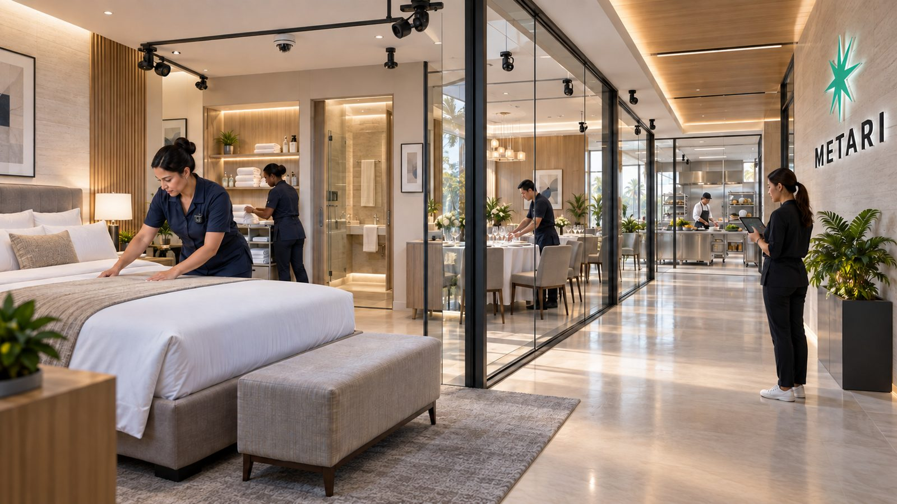
Bed making, linen, cleaning, inspection.
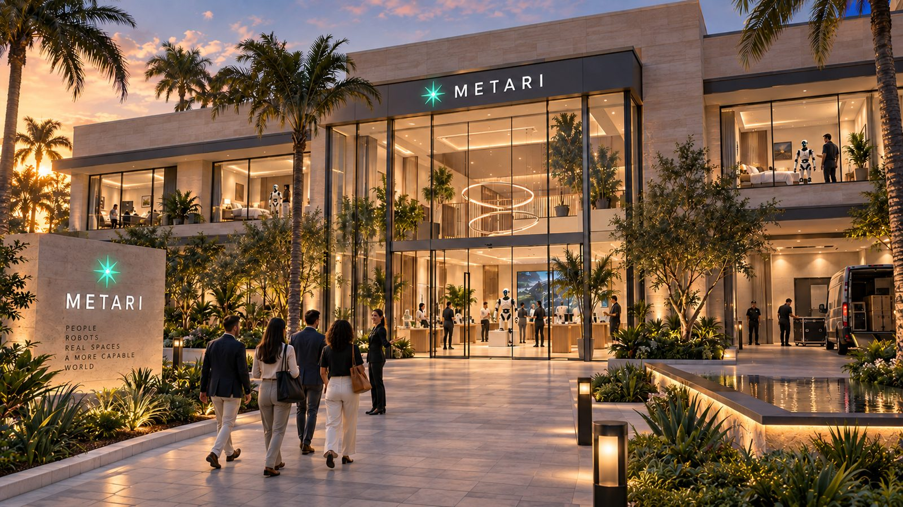
Assistance, luggage, deliveries, navigation.
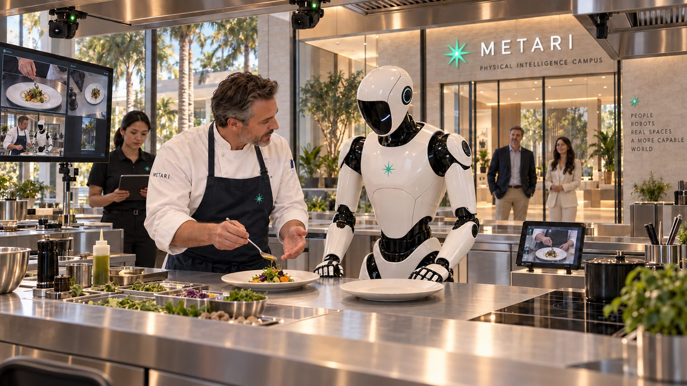
Prep, storage, tools, cleaning, restocking.
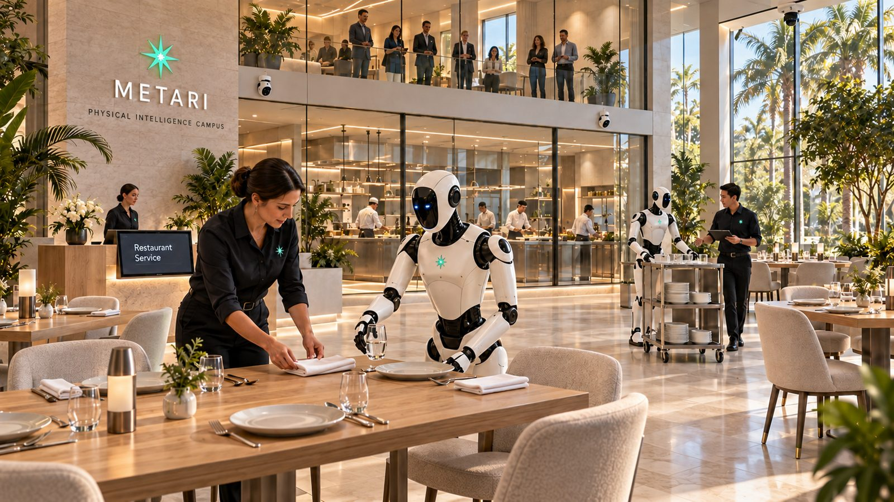
Drink prep, cup handling, handoff, inventory.
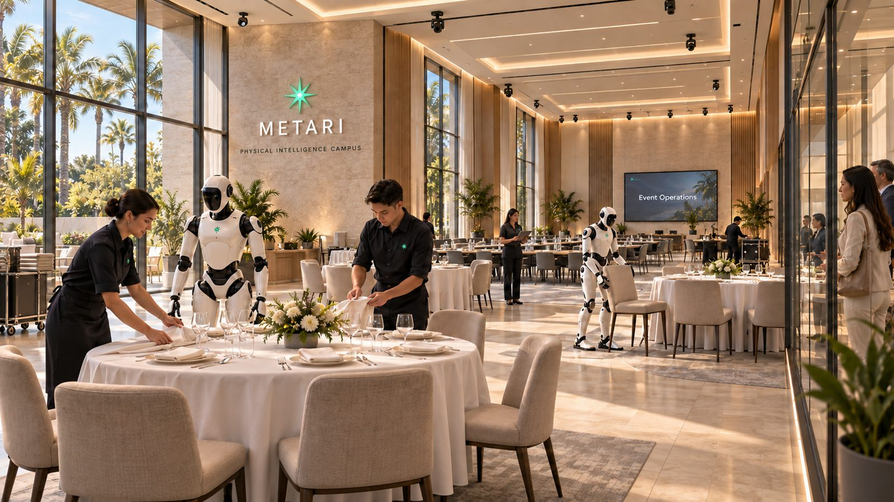
Sorting, folding, carts, loading, linen.
Navigation, carrying, balance, avoidance.
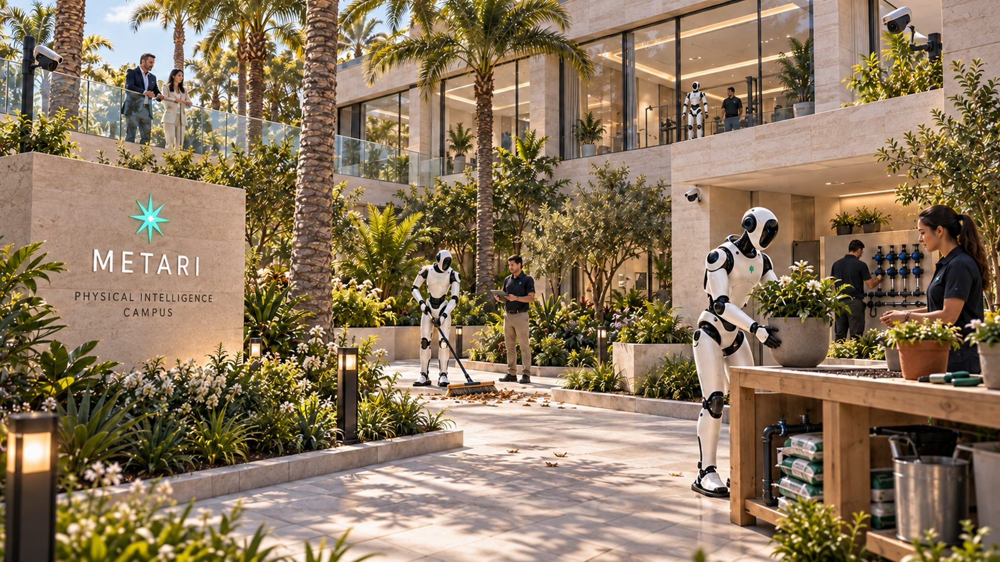
Towels, tools, reset, outdoor navigation.
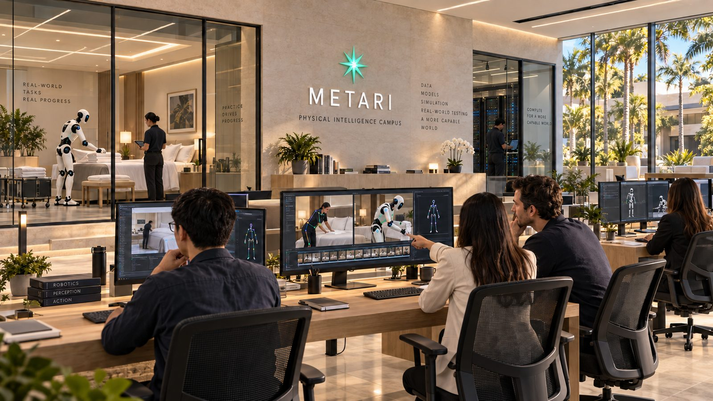
Supply movement, reset, non-clinical support.
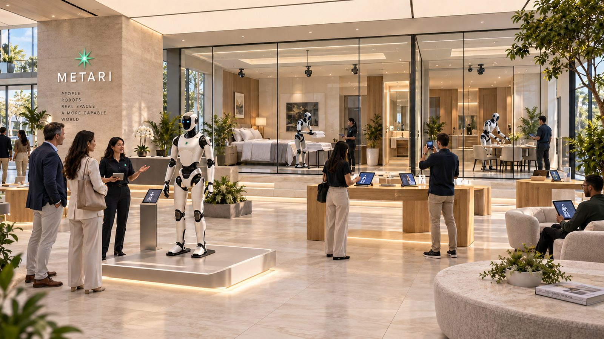
Retrieval, navigation, daily living support.
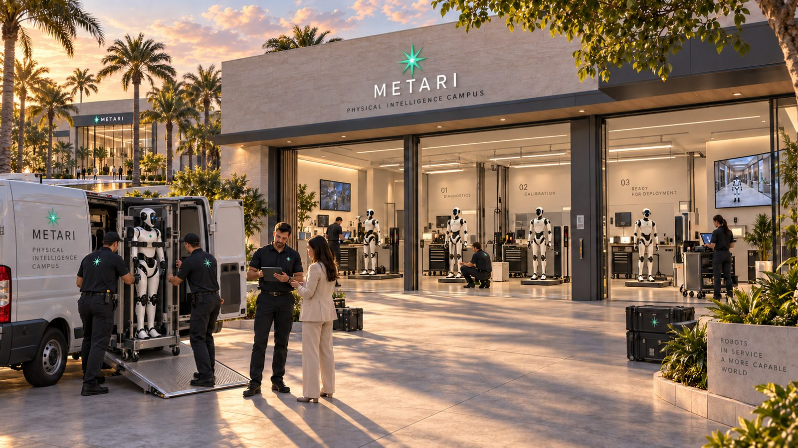
Stocking, shelving, inventory, assistance.
Tools, repairs, fasteners, handling and inspection.
Configurable rooms for multifamily, facilities and consumer-service workflows.
A controlled environment for professional demonstration collection, dexterity research, precision tool-use evaluation, close-range human interaction and future deployment readiness. This is not a claim that robots are ready to cut people's hair.
AI labs specify the task and data requirement. Metari configures rooms, objects, lighting, variations, expert operators and capture hardware around the order.
“500 hours of hotel housekeeping manipulation.”
WE COLLECT WHAT THE MODEL NEEDS. NOT JUST WHAT HAPPENS TO BE AVAILABLE.
A planned structured evaluation framework for repeatable task performance, not an industry certification.
A high-end enterprise showroom where buyers can see robots perform real workflows, review evaluation results and configure pilots before deployment.
Capabilities, environments, tested tasks and integration requirements.
Performance, interventions, failure modes and recovery.
Environment, workflow, success criteria and supervised pilot plan.
Enterprise teams can observe supervised humanoids handling cups, drink preparation, order handoff, inventory, counter cleaning and guest interaction across a complete workflow.
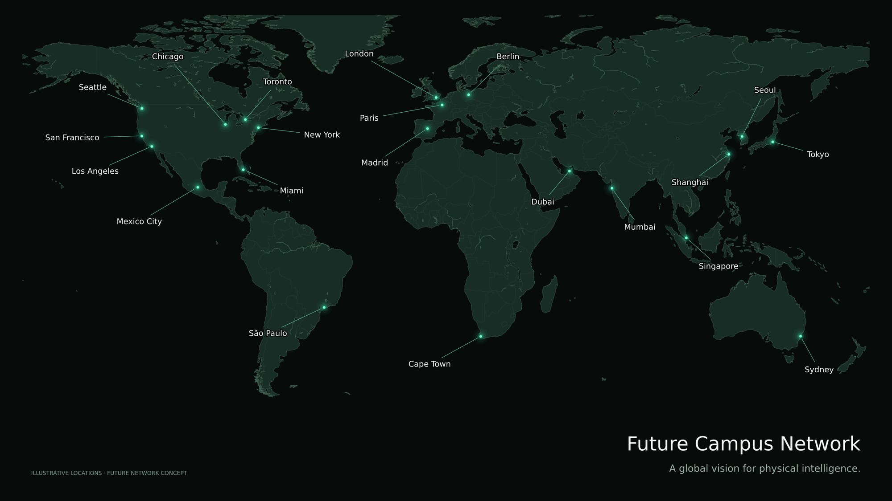
Dense synchronized capture makes human and robot behavior reconstructable across a task.
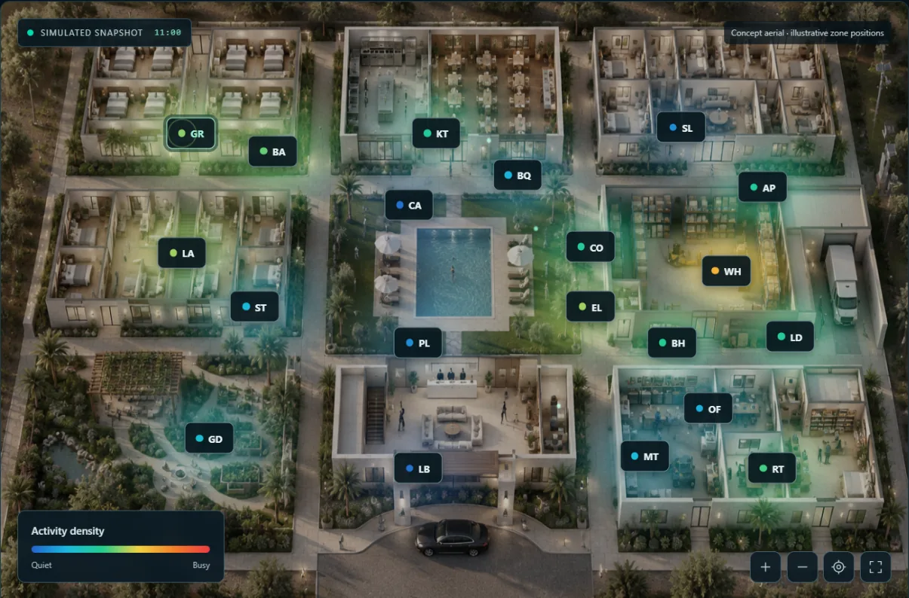
Somewhere to learn, somewhere to fail, somewhere to prove capability and somewhere enterprises can confidently prepare for deployment.